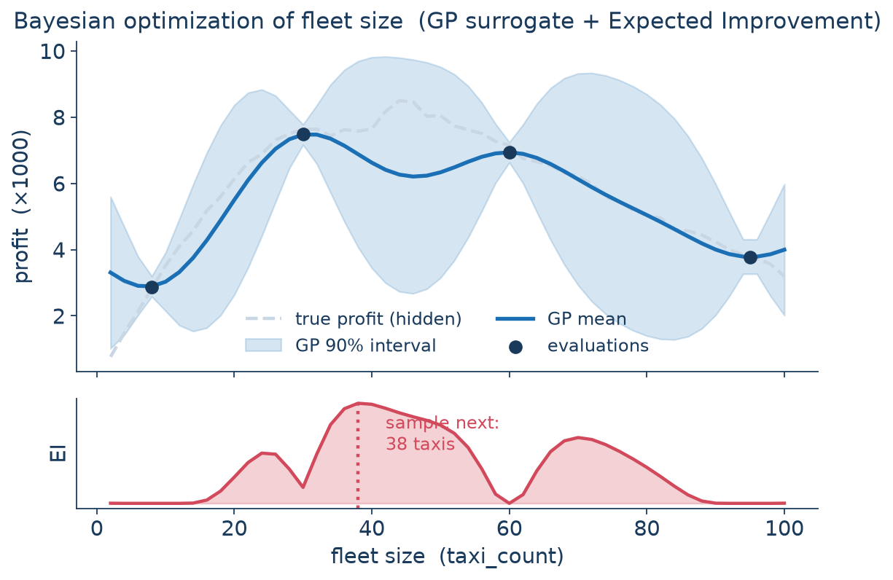
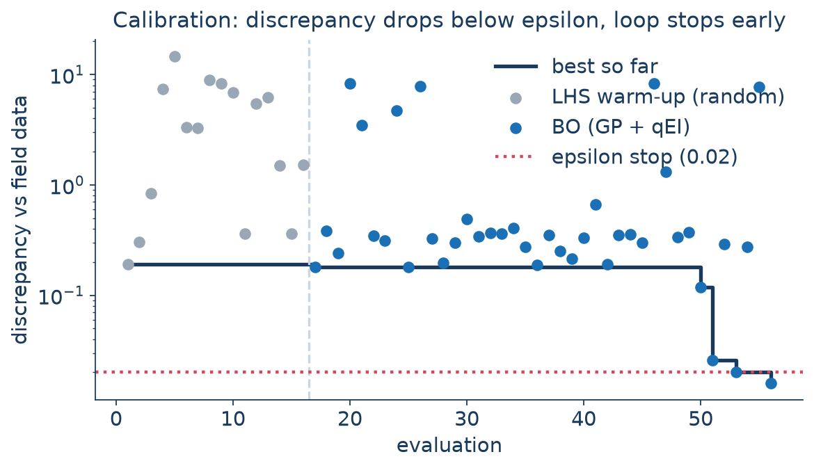

graph LR
D["Design / Acquisition<br/>(pick next samples)"] -->|submit| R["Runner<br/>(local / Slurm)"]
R -->|simulate| S["Simulator<br/>(POLARIS / taxi)"]
S -->|outputs| M["Metric<br/>(link_moe / output_match)"]
M -->|objective| ST["SampleStore<br/>(SQLite)"]
ST -->|fit| SU["Surrogate<br/>(GP)"]
SU --> D
ST -.->|stop?| X(("done"))
classDef box fill:#ffffff,stroke:#1a6fb5,stroke-width:1px,color:#1a3a5c;
class D,R,S,M,ST,SU,X box;
PolarisOpt
Model Calibration and Exploration Library
Vadim Sokolov at George Mason University
2026-06-17
The setting
A calibrated POLARIS model is the product of many full simulation runs.
- One full-region iteration: hours of wall-clock, 60+ GB of memory.
- Dozens of behavioral parameters scattered across POLARIS JSON config files.
- “Does this parameter set match the observed link counts?” — answered only by running the model.
This is the classic expensive black-box regime:
evaluations cost real money, gradients don’t exist, and the simulator is stochastic.
PolarisOpt is the library that drives those evaluations intelligently — for calibration (match data) and exploration (screen, optimize, understand).
What PolarisOpt is
Modular design-of-experiments and Bayesian optimization for POLARIS.
Static DoE
One-shot sample generation for screening & sensitivity.
- Latin Hypercube
- Morris (elementary effects)
- Sobol
- Manual
Sequential DoE
Adaptive surrogate-driven Bayesian optimization.
- GP / Multi-task GP surrogates
- qLogEI / qLogEHVI acquisition
- Single- and multi-objective
- Pluggable stopping criteria
Configured in YAML, run from the CLI or Python, every evaluation persisted to SQLite — so a study survives a crash and resumes.
The sequential design loop
Each box is a swappable plugin. The loop is the same whether the black box is a 6-hour regional POLARIS run or a 0.3-second taxi simulation.
A study is one YAML file
name: region-calibration
workspace: /lcrc/.../experiments/region-001 # SampleStore + per-sample dirs live here
seed: 42
simulator: # the black box
type: polaris
options: { binary: Integrated_Model.sif, model_source: Region_2050, num_threads: "16" }
runner: # where it runs
type: slurm
options: { default_resources: { partition: TPS, time: "04:00:00", mem: 64G } }
parameters: # what to vary (mapped into POLARIS JSONs)
source: ./params.yaml
metric: # what "good" means
type: link_moe
options: { target: baseline/Result.h5, aggregation: rmse }
phases: # the plan
- { name: screen, type: static, design: { type: lhs, options: { n: 16 } } }
- name: calibrate
type: sequential
warm_up: { type: lhs, options: { n: 8 } }
generator: { type: acquisition, options: { surrogate: {type: gp}, acquisition: {type: qei} } }
stop: { type: any, criteria: [ {type: max_iter, options: {n: 12}}, {type: epsilon, options: {epsilon: 0.01}} ] }Run it
polarisopt validate study.yaml # schema + plugin-option check (<1s)
polarisopt plan study.yaml # stage sample 0, render the sbatch script, submit nothing
polarisopt run study.yaml # submit + poll the whole study
polarisopt status study.yaml -v # per-sample table: jobid, runtime, last log line
polarisopt resume study.yaml # pick up an interrupted run
polarisopt best study.yaml # winning sample's inputs + metric (--json to pipe)
polarisopt retry-failed study.yaml --runvalidate and plan catch the typo class — a wrong plugin name, an option that isn’t in the constructor — in one second, instead of after a 30-second stage in a real run.
Master / slave architecture
graph TB
subgraph M["Master — one Python process"]
SS[SampleStore SQLite]
SR[StudyRunner]
GP[Surrogate / Acquisition]
RN[Runner ABC]
end
subgraph SL["Slaves — one process per sample"]
P1[POLARIS binary]
P2[POLARIS binary]
end
SR --> SS
SR --> GP
SR --> RN
RN -. sbatch .-> P1
RN -. sbatch .-> P2
classDef box fill:#ffffff,stroke:#1a6fb5,stroke-width:1px,color:#1a3a5c;
class SS,SR,GP,RN,P1,P2 box;
style M fill:#eef3f8,stroke:#c9d6e3,stroke-width:1px,color:#1a3a5c;
style SL fill:#eef3f8,stroke:#c9d6e3,stroke-width:1px,color:#1a3a5c;
The master never imports POLARIS.
- Math layer (GP fit, acquisition) lives on the head node — a fraction of a CPU.
- Heavy simulations fan out across Slurm.
- The
RunnerABC is the only boundary. - Every transition hits the SampleStore → kill it, resume it.
- No daemon, no worker pool, no Postgres queue.
Everything is a plugin
Each swappable piece is an ABC + a registry. Add one with a class and a @register("name") decorator; reference it from YAML. External packages ship plugins through entry points — no core changes.
| Family | Built-in implementations |
|---|---|
| Design | lhs · morris · sobol · manual |
| Surrogate | gp · mtgp (multi-task) |
| Acquisition | ei · qei (qLogEI) · qehvi (qLogEHVI, multi-obj) |
| Stop | max_iter · epsilon · plateau · hypervolume · any · all |
| Metric | identity · link_moe · choice_share · constant |
| Simulator | mock · polaris · polaris_convergence |
| Runner | local · slurm |
| Transfer | local · anl · globus |
Same study, laptop → cluster
Only the runner changes. The simulator, parameters, metric, and phases are untouched.
Develop and debug a study on your laptop in seconds; ship the same file to the cluster for the real run.
Demonstrating it: the Taxi simulator
Why a toy simulator?
POLARIS is the real target, but it’s slow to demo. We need a stand-in that is fast yet structurally honest.
A pure-Python, seedable port of Amazon’s emukit-playground taxi simulator:
- City grid, fleet of taxis, journey requests, surge pricing.
- Tunable inputs:
taxi_count,base_fare,cost_per_tile,max_multiplier, … - Outputs:
profit,journeys_completed,pick_up_time,missed. - Stochastic, like POLARIS — averages over seeded repeats.
- One run ≈ 0.3 s instead of 6 hours.

Same Simulator / Metric / Runner contracts as a real POLARIS study — the workflow you see is the real POLARIS workflow, just faster.
Five workflows, one library
| # | Workflow | Capability shown | Where |
|---|---|---|---|
| 1 | Explore the simulator | the black box itself | notebook |
| 2 | LHS screening | static DoE + SampleStore | laptop |
| 2b | Morris screening | sensitivity / which knobs matter | laptop |
| 3 | Bayesian optimization | GP + qEI, maximize profit | laptop → Crossover |
| 4 | Calibration | inverse problem, custom metric | laptop → today’s demo |
Verified end-to-end (seed 42): default settings earn ≈ 6,000 profit; a 64-sample LHS screen finds 15,645; the 32-evaluation BO study finds 16,834 and stops itself on a plateau.
Bayesian optimization, concretely
The GP surrogate interpolates the few expensive runs; Expected Improvement turns predicted mean and uncertainty into where to sample next: it explores where the model is unsure and exploits where profit looks high.

GP fit to a handful of taxi-fleet evaluations; EI proposes the next fleet size to run. The same gp + qei plugins power workflow 3 — on a laptop or on Crossover.
Write your own simulator
A Simulator turns a sample into a job and reads its output back. Register it through an entry point — pip install, and type: taxi works in any YAML.
@simulator_registry.register("taxi")
class TaxiSimulator(Simulator):
def prepare(self, sample, space, workspace):
params = space.values_dict(sample.inputs)
(workspace / "inputs.json").write_text(
json.dumps({"params": params, "seed": ...}))
return JobSpec(
command="python -m taxidemo.runner "
"inputs.json outputs.json",
cwd=workspace)
def collect_output(self, sample):
return json.loads(
(sample.folder / "outputs.json").read_text())Write your own metric
A Metric turns simulator outputs into the number the optimizer chases. Here is taxidemo’s calibration metric — the toy analog of POLARIS’s link_moe.
@metric_registry.register("output_match")
class OutputMatchMetric(Metric):
"""Mean squared relative error between outputs and observed targets. 0 = perfect."""
def compute(self, output) -> np.ndarray:
errors = [((output[k] - t) / self._scales[k]) ** 2
for k, t in self._targets.items()]
return np.asarray([float(np.mean(errors))])Swap output_match → link_moe and the exact same study calibrates real POLARIS link volumes.
Calibration = the inverse problem
Optimization asks “what inputs maximize profit?” Calibration asks the harder question: “what inputs reproduce the observed data?”
We validate the pipeline with a parameter-recovery test:
- Pick true parameters; simulate synthetic “field data” (seeds the calibration never sees).
- Hide the truth; calibrate against the data alone — minimize
output_match. - Compare what we recover to the truth.
phases:
- name: calibrate
type: sequential
minimize: true
warm_up: { type: lhs, options: { n: 16 } }
generator: { type: acquisition, options: { surrogate: {type: gp}, acquisition: {type: qei} } }
stop: { type: any, criteria: [ {type: max_iter, options: {n: 12}},
{type: epsilon, options: {epsilon: 0.02}} ] }Live demo
Calibration convergence

Discrepancy versus evaluation: the LHS warm-up scatters, then GP + EI drive the discrepancy below the epsilon threshold and the loop stops early. This is the same plot the notebook builds live.
What the demo shows
The result
- 56 evaluations, ~105 s total.
epsilonstop fired at iteration 10 — the loop quit when the data was matched.- Best discrepancy 0.0159.
taxi_countrecovered almost exactly (41 vs true 40).
The honest part
- Pricing knobs landed far off — with an equally good fit.
- Below the cancellation threshold, prices don’t move the observed quantities.
- So the data can’t identify them — no method could.
The discrepancy plot and the data-space table are the report card; the parameter table tells you which of the data-consistent explanations got picked.
This is exactly the real-model case. Link counts alone rarely pin down every behavioral parameter. Remedy: observe more, or screen first (Morris) and calibrate only what the data responds to.
Running on Argonne HPC
Argonne users run the same study YAML on LCRC Crossover — one sbatch per sample.
setup_commandsload modules / activate the env on the compute node — clean simulator/runner separation.- Node sizing matters: a full regional model eats ~30 GB/instance — pack 4 workers × 32 threads, not 8 (OOM on 253 GB nodes).
- Stateless slaves: a fresh
sbatchper sample, ~10 s startup — negligible against hour-long regional iterations.
Moving models & migrating in
Data movement — Globus
Regional models live on the VMS shared drive; runs happen on /lcrc scratch. The anl / globus transfer plugins (via polaris-studio) stage them automatically.
Coming from EQ-SQL?
A drop-in shim for polaris.hpc.eqsql — same insert_task / Task surface, but plain sbatch/squeue underneath. No Postgres, no worker pool, no cross-user contamination.
Argonne integrations install with pip install polarisopt[anl].
Built for real HPC runs
The toy hides none of the machinery that matters at full-region scale.
- Resume —
Ctrl-Cthe master,polarisopt resume; RNG + surrogate restored, and on-disk results are harvested even if Slurm’s status went stale (v0.11). - retry-failed — flip crashed samples back to PENDING, re-run.
- plan / validate — catch errors before burning node-hours.
- SampleStore — every evaluation, input, output, runtime, log path — queryable SQLite.
- Globus transfer — stage models between VMS and cluster scratch.
- EQSQL-compat shim — drop-in for
polaris.hpc.eqsql, no Postgres.
Battle-tested on live POLARIS calibration since v0.6 (May 2026); additive, no breaking changes through v0.11.
Getting started
Docs
- Getting started + tutorials
- Study YAML reference
- Plugin authoring guide
- Taxi-demo walkthrough
Code
github.com/VadimSokolov/polarisopttaxidemo/— five runnable workflowstaxidemo/notebooks/05_calibration.ipynb
Takeaways
- PolarisOpt = DoE + Bayesian optimization for expensive POLARIS models — calibration and exploration.
- A study is one YAML file; the same file runs on a laptop or a Slurm cluster.
- Everything is a plugin — simulators, metrics, surrogates, designs — added via entry points, never core edits.
- Master/slave + SampleStore → studies survive crashes and resume.
- The taxi demo exercises the entire stack in seconds; the workflow is the real POLARIS workflow.
- Calibration is an inverse problem — and PolarisOpt makes the identifiability question visible, not hidden.
Thank you — questions?
github.com/VadimSokolov/polarisopt
PolarisOpt · PUG 2026